Argyle Diamond Mine
This discussion on the Argyle mine is based essentially upon my experience while working at the mine from 1980 until late 1989 and is designed as an overview. If you require any more detailed information, please send me an email.
The Argyle mine has been in production since late 1985 and is in the process of changing its operation from open pit to underground. A presentation on the Argyle mine was made by the author in June 2007 and can be found here.
References to all published papers can be found in the bibliography and a location map of the lamproitic and kimberlitic rocks of WA (from Jaques, Lewis and Smith 1986) is attached here. I have include quite a number of photographs on this page and it may take a little while to load but I feel a picture is worth a thousand words – so please be patient. If it is too bad, please contact me.
{kind=link}
Introduction and Discovery
The Argyle mine is located in the Kimberley Region of Western Australia.
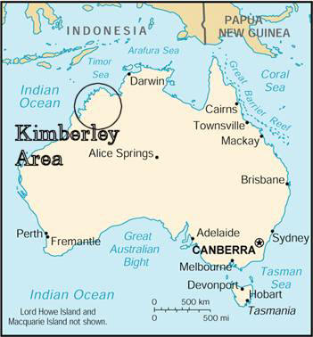This mine was discovered in late 1979 by the Ashton Joint Venture (AJV) which was a joint venture exploration project managed by CRA Exploration Pty Limited (now Rio Tinto Exploration) and including Ashton Mining (purchased by Rio Tinto in 2000) and Northern Mining Corporation. I was working for CRA Exploration at the time and was involved with reconnaissance stream sampling in the East Kimberley and testing magnetic targets in the West Kimberley. I was relocated to the exploration camp in the East Kimberley prior to the pegging of the Argyle pipe. The pipe is located in a steep mountain range and access to the area was initially only by helicopter.
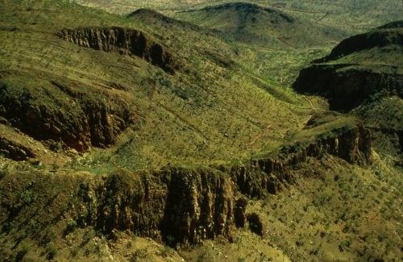The Argyle mine is located about 100 km south of Kununurra, in the East Kimberley region of northern Western Australia. CRAE was camped near Kingston’s Rest, about 75 km south from Kununurra on the Great Northern Highway, undertaking regional diamond sampling of the area. The camp was a typical exploration camp of the time, with tents for accommodation, a large mess tent, and a diesel generator to generate electricity for fridges and freezers. No TV or videos in those days. The pipe had been discovered as part of a regional exploration program that had sampled streams from all over the Kimberley region. The sampling comprised collecting about 40 kg of –4mm gravel from heavy mineral trap sites, i.e. from areas where the heavy minerals like, gold, garnet, ilmenite, chromite and diamond, would accumulate.
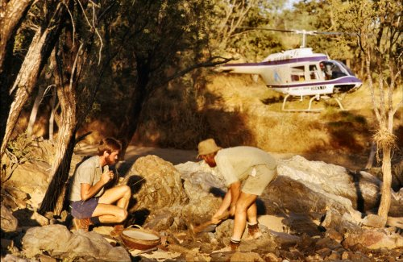Due to the almost total lack of roads and tracks into much of the areas sampled, helicopters were used to get to and from the sample sites. Bell JetRangers were the most widely used, followed by Squirrels and Hughes 500 aircraft.
Two reconnaissance stream samples collected in August 1979 in Smoke Creek, one about 10 km and the other about 20 km downstream of what we now know as the Argyle pipe, contained diamonds. This was a very unexpected result, as in diamond exploration, we usually search for the “indicator minerals” of diamond (pyrope garnet, picro-ilmenite, magnesio-chromite, and chrome-diopside), and to actually find a number of diamonds in these initial samples was very exciting. Mineral observer Lyn Tagliaferri found the first Argyle diamonds.
She actually thought that they were some test diamonds put in by the mineralogists to check the efficiency of the mineral observers. So you can imagine what happened when she said to the mineralogist, “I found those test diamonds”! Anyway, the rest is history. The management scrambled to find out where they had come from and initiated follow up to confirm and try to locate the source of these diamonds. Dr Warren Atkinson was the manager of CRAE’s diamond exploration at the time and he sent Frank Hughes, who was in charge of field operations, to investigate.
Another exploration company, Uranerz, who had been exploring the area for Uranium, held part of the area of the Argyle pipe that CRAE wanted to peg with exploration tenements. The Uranerz tenement was about to expire and CRAE had to wait until this tenement has expired. Secrecy was very important at this time, so that no one else heard about the diamonds and pegged the area before CRAE. CRAE had a person at the Mines Department in Perth waiting for the notification that the tenement had expired. As soon as this occurred CRAE jumped into action and pegged the area around the Argyle pipe.
The exploration tenements were pegged over the area in late October 1979. The weather at that time of the year is very hot and humid, with daily temperatures of 38 to 42 degrees Centigrade (around 100 degrees F). Any metallic item you placed on the ground for any more than 10 seconds became extremely hot and difficult to pick up again. There was also the occasional thunderstorm in the area, which can dump about 50 mm (two inches) of rain in a very short time. One of these storms did force us to abandon pegging one day and escape back to camp. Some of the field crew almost had to stay the night in the bush, as the light was fading and the weather was almost too bad for the helicopter to return and pick them up.
The base camp was well stocked with equipment, vehicles and helicopters, which were accumulated while waiting for the “all-clear” to go pegging. Frank Hughes had purchased all the available topographic maps of the area, hired all the available four-wheel-drive vehicles and most of the helicopters in the region. This was designed to slow down any other exploration company from competing with our pegging, if the news got out that CRAE had made a big find in the area. A large area of tenements were pegged in the West Kimberley area, some 1000 km to the south west of Argyle, to throw other companies “off-the-scent” of the Argyle discovery.
The only forms of communication of the camp with Perth, about 3000 km to the south, were by HF radio or by “party-line” telephone. Both of these were open communication lines and anyone could listen in on our phone or radio calls. All communication which dealt with the pegging of the new find had to be done in code or from a more secure phone line in Kununurra, about 45 minute drive away.
The “pegging” of the tenements comprised erecting corner posts at the four corners of the rectangular “mineral claims” and “intermediate pegs” every 300 m along the boundaries between the corner pegs. The claims were to be a maximum of 100 ha. The corner and intermediate pegs required the digging of trenches to indicate the direction of the claim boundaries. This was difficult work in the heat and humidity at the time. If it was too rocky to dig trenches, then a row of rocks had to be built to indicate the claim boundary directions.
The Argyle pipe and alluvial gravels were very rich in diamonds and at least two diamonds were seen on the surface of ant hills (termite mounds) - see photo below taken by Peter Temby in November 1979 (click on the image to see a larger view). This diamond was about 4 mm in size and was washed off the anthill by the next thunderstorm!

Geology and Volcanology
The Argyle diamond pipe is a diamondiferous olivine lamproite diatreme with an age of about 1178 million years. Before the discovery of the Argyle mine, diamonds had traditionally been mined from kimberlite pipes. Kimberlites were first associated with diamonds in the diamond fields of South Africa and exploration in Australia was aimed at finding these kimberlite pipes. With the discovery of diamonds in lamproite pipes in the West Kimberley at Ellendale in the late 1970’s, exploration changed to include the search for minerals indicating the presence of kimberlite and lamproite type rocks.
I was fortunate to work at Argyle from late 1979 until 1989, when I transferred to the Argyle Diamonds’ Perth office to work on the Ellendale Project. Whilst at Argyle, I undertook extensive studies of the Argyle pipe to better understand the nature of the pipe and it’s diamonds. The most important step, to my mind, was the identification by Dr Volker Lorenz, of many volcanic features indicative of a phreatomagmatic style of volcanic eruption. “Phreatomagmatic” means the interaction of the molten lamproite magma (molten rock) with groundwater during the volcanic eruptions of the pipe. The Argyle pipe pyroclastics illustrate many features common to other phreatomagmatic volcanic eruptions in other volcanic rock types (see my discussion below and in my section on “Diamond Volcanology”). The recognition of this style of eruption differs to the eruption style of kimberlites and many discussions were held with DeBeers geologists about these differences.
The Argyle pipe consists of three major rock types; a quartz sand bearing tuff (“sandy tuff”), a tuff without the sand (“the non-sandy tuff”) and cross cutting olivine lamproite dykes. In hand specimens, the sandy tuff has the appearance of sandstone with angular volcanic fragments. Original outcrops of the sandy tuff were brown and rusty in appearance (see photo below taken in the northern part of the Argyle pipe. The non-sandy tuff and olivine lamproite dykes did not outcrop and were discovered during drilling and trenching.
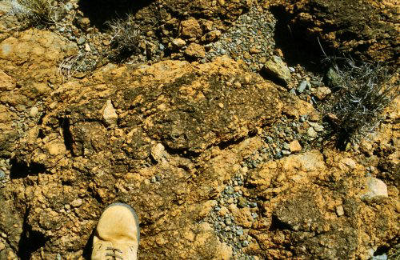The highest grade of diamonds, occur in the sandy tuffs (3 to 30 carats per tonne, ct/t), with lower grades in the non-sandy tuff (about 1 to 2 ct/t) and the olivine lamproite dykes (about 1 ct/t or less). The sandy tuff comprises the majority of the pipe in volume, surface area and depth extent, and is the main material mined and fed to the process plant. Petrography, petrology and geochemistry are fully discussed in Jaques, Lewis and Smith (1986).
The sandy tuff is composed of juvenile (volcanic) clasts of olivine lamproite, exotic clasts of the sandstone and shale wall rocks to the pipe, set in a matrix of fine grained lamproite volcanic ash and quartz sand. In thin section the fine-grained volcanic matrix has been partly recrystallised to a potassium-feldspar, which binds the rock and makes it particularly tough. The lamproite clasts vary from a fine-grained blocky type clast, to clasts that are highly vesicular. Some of the vesicular clasts have been flattened and appear like fiamme. The blocky clasts are the result of rapid chilling, probably caused by the contact of the magma with water. The photo below is of a sawn slab of sandy tuff, has a width of field of about 10 mm and shows the dark green brown lamproite clasts, large clear rounded quartz grains, and the light coloured ash matrix. The light colour of the matrix is due to the deuteric alteration of anatase to leucoxene in the fine ash material. Note that nearly all the primary mineralogy of the lamproite in the tuffs is altered. Phlogopite is preserved in the olivine lamproite dykes. Chromite has also survived alteration and is a key indicator mineral for lamproite exploration.
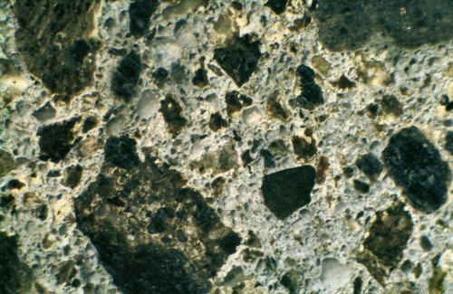The photo (width of field 2.2 mm) below is of a thin section of the sandy tuff and clearly shows the round clear quartz grains dominating the rock. The juvenile lamproite clast in the centre of the photo shows talc pseudomorphs, after olivine phenocrysts, in the mainly fine-grained lamproite clast. Note that the quartz grains are mostly rounded and unbroken, and this is important evidence in the discussion of the physical environment during the formation of the Argyle pipe.
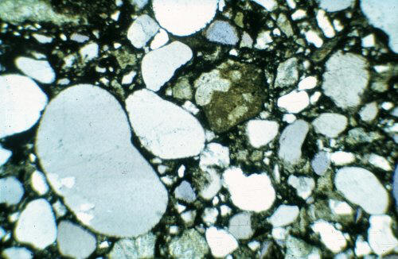The non-sandy tuff is composed of olivine lamproite clasts set in finer grained altered ash matrix. The photo below of the non-sandy tuff contrasts strongly with the one above. Large pseudomorphs after olivine can be seen dominating the photo. A large clast is present in the top left hand corner. Individual pseudomorphs after olivine crystals can be seen in the matrix.
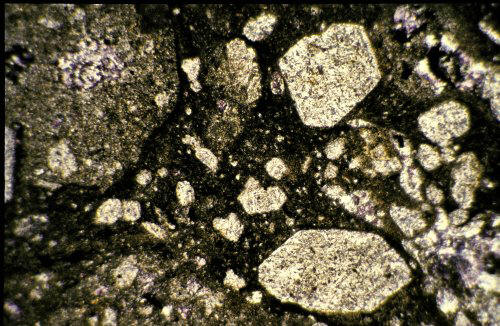The lamproite dykes can be either olivine phlogopite lamproite or phlogopite olivine lamproite. The dykes cross cut the sandy tuffs and appear to have been intruded in a late stage of the formation of the Argyle pipe. The photo below is a thin section (width of field 2.2 mm) of a dyke showing abundant tan-coloured phlogopite. The phlogopite is present as both coarse and fine grains, and may also rim the altered olivine phenocrysts. Olivine has been altered mainly to talc, carbonate, serpentine or chlorite. The groundmass comprises minor anatase, sphene, perovskite, and accessory apatite. Opaque minerals include manganiferous ilmenite, titaniferous magnesio-chromite and traces of sulphides.
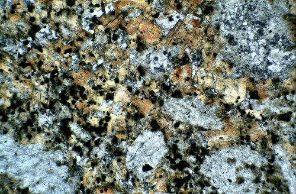The sandy tuffs vary from very well bedded to chaotic in nature. The well-bedded tuffs typically occur in the northern parts of the pipe, and probably nearer the original top of the pipe. The structures in the bedded tuffs include low angle cross bedding, scour and fill channels, accretionary lapilli and water escape structures. Interbedded and intermixed with the sandy tuffs, are small erratic occurrences of tuffaceous sandstone and tuffaceous mudstone. I will illustrate the above volcanic features with photographs. The photo below illustrates the well-bedded sandy tuff with low angle cross bedding (arrow). This rock slab (scale shown in cm) also shows reverse graded bedding.
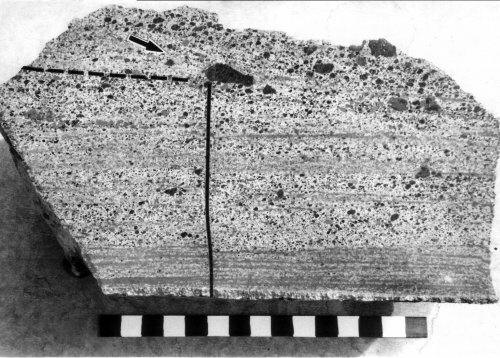This picture is of a section of large diameter (8” or 200 mm) diamond drill core that was drilled into the Argyle pipe as part of the grade estimation program. The core shows very well developed bedding, and in the top left of the core, you can see a scour and fill structure. Graded bedding is also evident.

Accretionary lapilli have been seen in outcrop and drill core, mainly in the northern part of the Argyle pipe. These accretionary lapilli are predominantly spherical to elliptical in shape, and occur up to 10 mm in size. They comprise a core of sandy tuff, typical of the matrix of the sandy tuffs, with a fine rim of ash, which binds the lapilli together. Ash pellets also occur, but these do not have the characteristic fine-grained rim of the accretionary lapilli. The photo below is a sawn slab of sandy tuff with a width of field of about 30 mm.

Water escape structures also occur in the sandy tuffs and are probably caused by dewatering of the tuffs under the load of overlying tuffs. These structures are often seen in sandy sediments. Clastic dykes are present in the northern part of the Argyle pipe and comprise dykes of tuffaceous sandstone. At a finer scale, these dewatering features are also seen in tuffaceous sandstone (see photo below). The scale is in cm.

Origin of the Quartz Sand
All of the above features, accretionary lapilli, water escape features, and scour and fill channels, indicate an eruption environment with abundant water. The wall rocks of the pipe are quartzites and shales of the Lower Proterozoic Revolver Creek Formation and the Middle Proterozoic Carr Boyd Group. The age of the pipe is Middle Proterozoic. The pipe was intruded during the deposition of the upper parts of the Carr Boyd Group, probably at the time the Glen Hill Formation sandstones were being deposited.
I interpret the local environment at the time of intrusion, to be a shallow water environment with a sandy bottom. The lamproite magma would have been contained in a narrow passage during the rise up through the older and more competent Lower Proterozoic granitic basement and into the Revolver Creek Formation. The Carr Boyd Group sediments, however, were much younger, probably poorly lithified and probably water-saturated. At the surface, the sands (possibly Glen Hill Formation equivalent) may have been free flowing.
The lamproite, when it encountered the water saturated sediments of the Carr Boyd Group, would have become potentially very explosive, and only where the overlying lithostatic pressure allowed, the water would have flashed to steam and begun the explosive excavation of the vent. As the vent became excavated and the overlying lithostatic pressure was reduced, the depth at which the water could flash to steam deepened and steadily excavated the pipe to hundreds of metres depth. The intense activity as the explosion centre migrated downwards would have stirred a hot mix of tuffs and water and, in my opinion, is the reason for the destruction of any recognisable internal stratigraphy of the pipe. The vesicular clasts must have occurred during a period of eruption when the rapid chilling, caused by the interaction of the magma with water, was not as severe, and at a level where the lithostatic pressure allowed the magma to vesiculate.
The quartz sand in the sandy tuffs is largely composed of individual rounded quartz grains that have not been shattered by explosive activity, such as excavation of the vent through hard rock would have produced. There are some broken grains, but these are probably part of the older, more lithified Revolver Creek Formation. The sands at the top of the vent would have poured into the vent and become mixed in the violent stirrings within the vent.
The photo below illustrates what I think the Argyle pipe would have looked like during the later stages of its eruption. This photo is actually of Surtur, near Iceland (photo courtesy of Dr Lorenz). The tuff cone has risen above the level of the water and stopped the phreatomagmatic eruption activity. This strombolian style of volcanic eruption would have probably produced the non-sandy tuffs. At the end of the explosive eruptive stage, olivine lamproite dykes would have intruded up into the previously deposited tuffs.

I have also placed a number of images of the geology and volcanology of Argyle here.
Evaluation of the Argyle Pipe

The Alluvial Diamond Deposits of Smoke and Limestone Creek
The weathering and erosion of the Argyle pipe has released diamonds to be washed down creeks that drain from the pipe. The two main drainages are Smoke Creek, which drains essentially to the north, and Limestone Creek, which initially drains to the east then to the north east of the Argyle pipe. The lower reaches of Limestone Creek have been mined for diamonds at the Bow River mine.
The alluvial deposits were divided into, the Upper Smoke Creek Deposit, the Lower Smoke Creek Deposit and the Limestone Creek Deposit. The Upper Smoke Creek Deposit was very high grade and occurs immediately downstream of the Argyle pipe for a distance of about one km. The gravels comprising this deposit are about 1.5 m thick, coarse, poorly sorted, massively bedded and loosely consolidated. Mining of this deposit during 1983 and 1985 yielded 580 000 t at a grade of 4.6 carats per tonne.
The diamondiferous alluvial gravels of Lower Smoke Creek comprise four gravel units (or terraces) that are essentially parallel to the current course of Smoke Creek. The >i>A Terrace" occurs as a high level terrace about 8 m above the present flood plain level (top of C Terrace - see image on left). The gravels of the A terrace are about 2 m thick, lateritised, and lightly to moderately cemented. The A terrace forms an elevated plateau on the eastern side of Smoke Creek and is an example of inverted topography. The fact that the terrace is now 8 m higher than the current erosion surface indicate the great age of these gravel terraces. Mossbauer dating indicated a Miocene age (about 20 million years) for these gravels but this method only dates the iron oxide formation and so the actual age of the gravels may be significantly older. The disintegration of former quartzite clasts in these gravels is similar to the weathered quartzites at the top of the range surrounding the Argyle pipe and may represent weathering from the early Tertiary (about 60 million years).
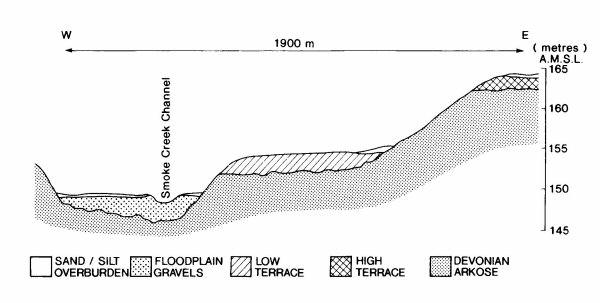The "B Terrace" occurs as discontinuous remnant about 4 m above the current flood plain level (top of C Terrace) and comprise 2 m thick quartzite gravels with a dark brown, friable and ferruginous matrix. Dating by Mossbauer spectroscopy indicates a minimum age of Pliocene (about 5 million years) for these gravels.
The "C Terrace" comprise the modern flood plain deposits of Smoke Creek. The gravels may be up to 4 m thick and form a broad, sinuous, and partly braided tract of unconsolidated channel fill gravels (see photos below). The clasts in the gravels are mostly derived from erosion of the adjacent Devonian-age Ragged Range Conglomerate. The gravels are horizontally bedded, show pebble imbrication and are mostly matrix supported. Fine sandy overbank deposits may overlie the gravels.
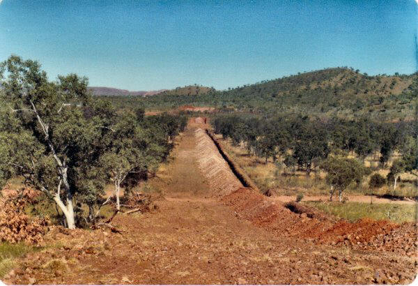Sampling Trench in Lower Smoke Creek
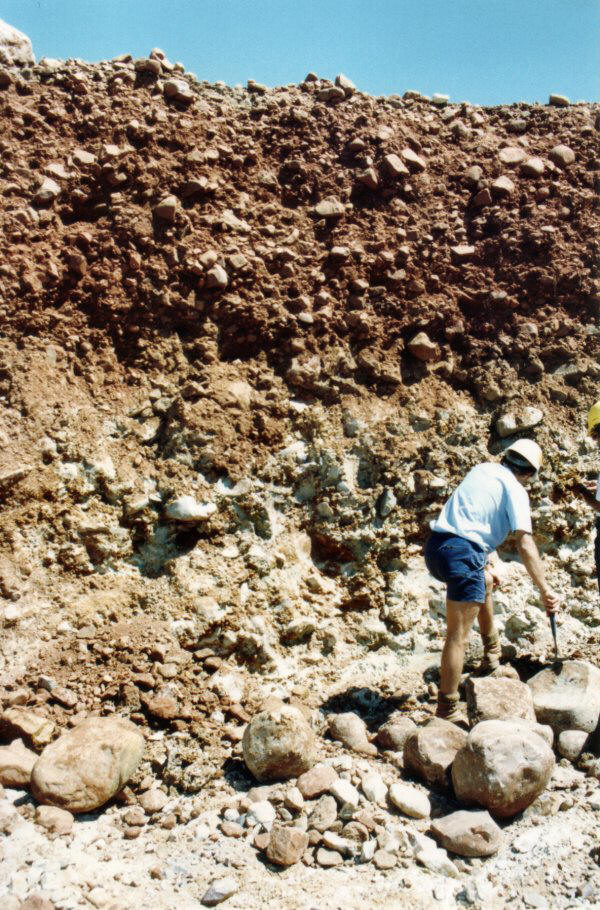Gravels of C Terrace exposed during mining
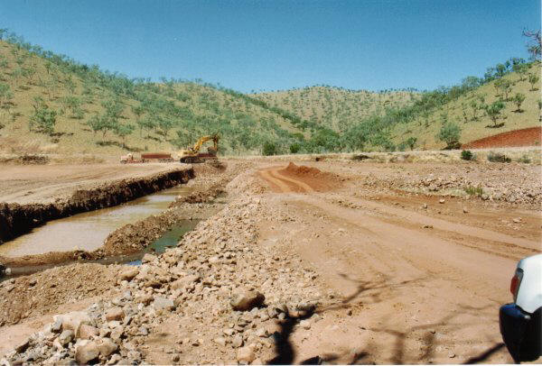Mining in Lower Smoke Creek (1991)
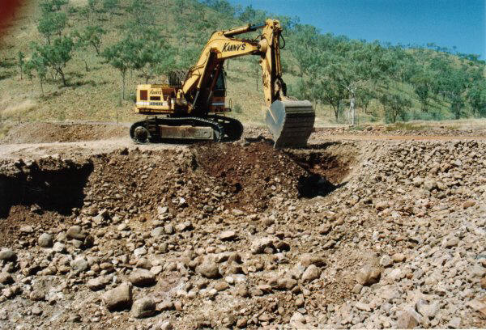Mining in Smoke Creek using hydraulic excavator
The modern channel deposits are termed the "D Gravels" and are of limited development in the upper parts of Smoke Creek but reach widths of 400 m and depths of 5 m some 30 km downstream, near to where Smoke Creek enters Lake Argyle.
The alluvial gravels of Limestone Creek comprise an alluvial fan, terraces, and modern flood plain terraces and channel deposits. The alluvial fan deposits were located immediately east of the Argyle pipe where the headwaters of Limestone Creek had breached the edge of the pipe on the southern side of the mountain range. The photo on the left was taken in 1982 during the Limestone Creek evaluation program and shows the sampling trenches running north - south from the base of the range. The Argyle pipe lies hidden in the valley in the centre of the ranges. In the background, Smoke Creek can be seen flowing north towards Lake Argyle.
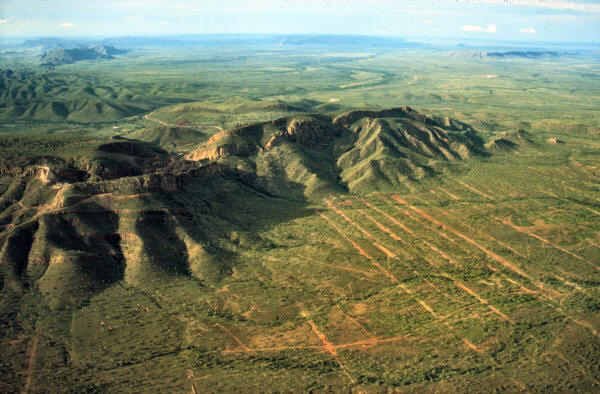View from south across the Argyle pipe, with the trenches of the Limestone Creek gravels in the foreground and Smoke Creek in background heading towards Lake Argyle.
The fan deposits are up to 3.5 metres thick, pisolitic, and contain iron oxide rimmed clasts bound with a ferruginous cement. Erosion of the fan deposits has produced deposits of diamondiferous lag and modern gravel deposits. The modern flood plain deposits comprise a narrow, sinuous and partly braided tract with gravel depths of up to 4 m with variable sand and silt overburden of up to 3 m. The section below indicates the relationship between the various units of the Limestone Creek Deposit.

Cross section of the Limestone Creek gravels.
The cross sections are from a paper by Boxer G L and Deakin A S. 1990. Argyle Alluvial Diamond Deposits, in Geology of the Mineral Deposits of Australia and Papua New Guniea (Ed. F E Hughes), pp. 1655-1658, The Australasian Institute of Mining and Metallurgy, Monograph No. 14.
The two photos below show some of the Limestone Creek B Terrace gravels